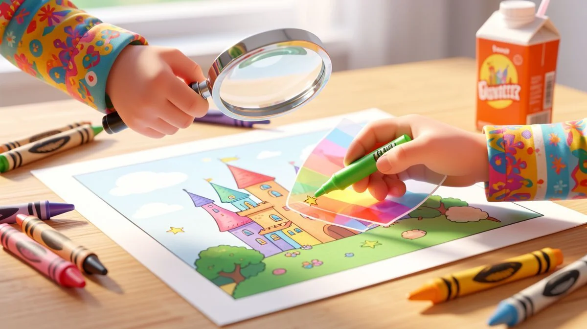
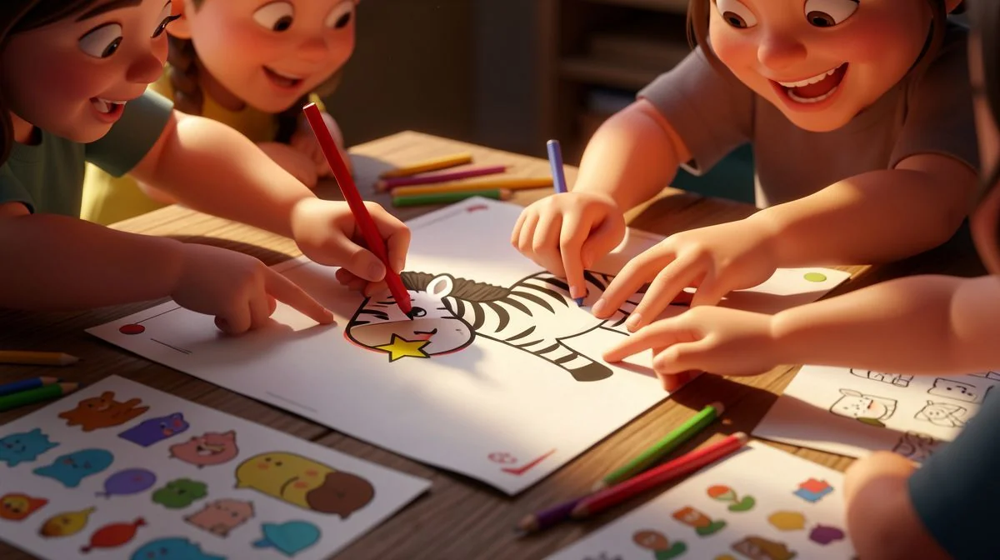
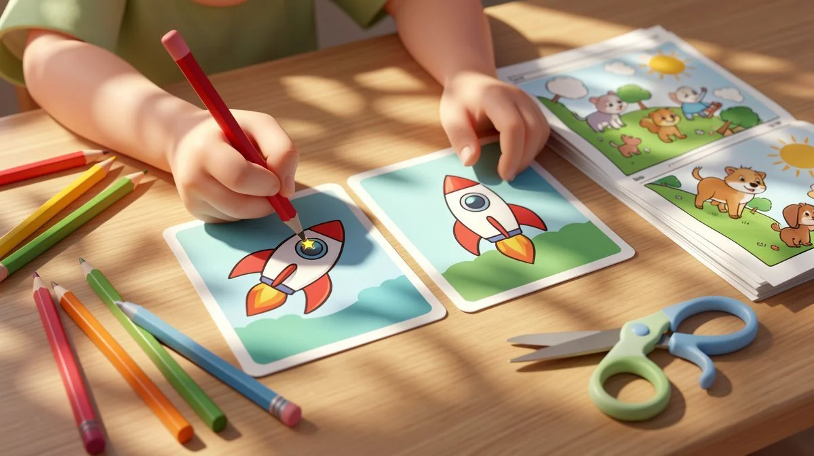
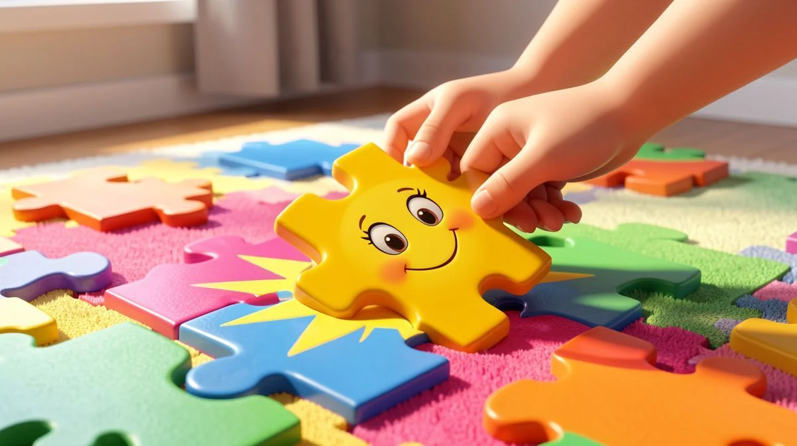
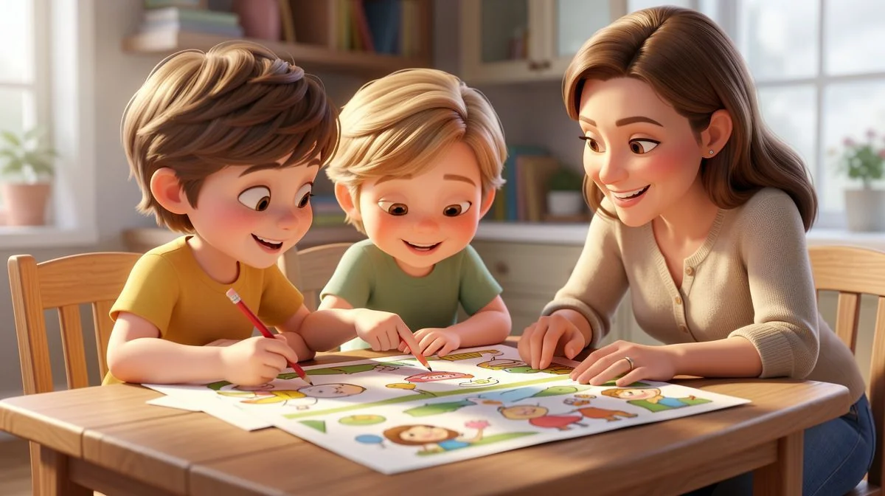

📑 Table of Contents
- Why Visual Perception Games Are More Than Just Fun
- Age-Appropriate Benefits: From Preschool to Preteen
- How to Integrate Spot the Difference Into Learning Environments
- Why We Love Spot the Difference | Picture Puzzle Visual Perception Activity | Rooms Vol.4
- Creative Variations to Keep Visual Games Fresh
- Common Pitfalls When Using Visual Perception Activities
Why Visual Perception Games Are More Than Just Fun
Have you ever noticed how some children seem to naturally spot details others miss? It’s not magic. It’s a trained skill. And spot the difference (photorealistic) activities for kids are one of the most powerful, underrated tools we have to build it. Let’s be real, most parents and teachers hand these over for a quiet ten minutes. But what’s happening inside a child’s brain during that time is nothing short of incredible.
The Science Behind Spot the Difference
This isn't just looking. It's high-level visual processing. Every time a child scans two nearly identical images, their brain is firing up neural pathways dedicated to visual discrimination. They're comparing, contrasting, and holding details in their working memory. Think of it as a workout for their occipital lobe. The photorealistic element – and I've tried dozens of styles – is the key. Cartoons simplify the world. Realistic images prepare them for it.
Beyond Entertainment: Cognitive Benefits
Sure, it's fun. The real payoff is cognitive. I watched my 5-year-old niece, Mia, spend 20 minutes completely absorbed in finding differences between two kitchen scenes. When she finally spotted the missing spoon, her triumphant "I see it!" was pure joy. But more importantly, she was developing sustained attention and concentration muscles that will help her in every subject.
She was also building a critical foundation for reading—learning to distinguish similar letters like 'b' and 'd'—and math, by comparing quantities and shapes. It's a no-brainer for holistic development. This is especially helpful for spot the difference (photorealistic) activities for kids.
Real-World Applications
This skill transfers. It really does. A child who practices careful observation in a puzzle is more likely to notice a friend's subtle change in expression, spot their lost shoe peeking from under the bed, or carefully follow the steps in a science experiment. They become more mindful, detail-oriented people. Pro tip: After they finish a puzzle, ask them to find something "different" in their own room. You'll be amazed at what they start to see.
Age-Appropriate Benefits: From Preschool to Preteen
Did you know that the same activity can challenge children differently at various developmental stages? One resource can grow with them. That’s the beauty of a well-designed spot the difference activity. You’re not just buying a puzzle; you’re investing in a tool that adapts.
Ages 4-6: Building Foundational Skills
For preschoolers, it's all about basic visual discrimination. Can they see which pillow has stripes? Is the plant in a different spot? The goals are simple: focus for more than a minute and identify obvious changes. Keep sessions short—5 to 7 minutes is plenty. Celebrate every find with gusto! This builds confidence and primes their brain for the more systematic work to come.
Their scanning will be all over the place at first, and that's perfectly normal. This is especially helpful for spot the difference (photorealistic) activities for kids.

Ages 7-9: Developing Strategic Thinking
Here’s where it gets interesting. Kids this age start developing their own methods. In my classroom, 8-year-old Carlos invented a finger-tracking system—moving left to right, top to bottom—to compare images. He wasn't just looking; he was problem-solving. His teacher later told me his reading fluency improved because he wasn't losing his place as often. That’s the hidden connection. These activities teach them to be strategic, to break a big task into manageable sections. A total for homework stamina.
Ages 10-12: Enhancing Critical Analysis
Don't think preteens are too old for this. The challenge shifts. Now, it's about deductive reasoning and hypothesis testing. The differences become subtler—a shadow's length, a slightly ajar drawer. They learn to formulate questions: "If this light is on, the shadow should fall *here*... so that's one difference." This sharpens critical analysis skills they’ll use in essay writing and lab reports.
Honestly, I'd use these as a warm-up in my middle school classroom if I could. It forces a level of precision that digital games often skip.
How to Integrate Spot the Difference Into Learning Environments
Let's be real. You can have the best activity in the world, but if you don't know how to use it, it's just another piece of paper. The magic happens in the setup. This is especially helpful for spot the difference (photorealistic) activities for kids.
I learned this the hard way. I once printed a beautiful spot the difference puzzle and just handed it out during free time. The result? A mess of crumpled papers and kids asking for the iPad after two minutes. I had to rethink my approach. What I've found works best is intentional integration.
Classroom Implementation Strategies
Create a dedicated visual perception center. This doesn't need to be fancy. A small table with a few laminated puzzles, some dry-erase markers, and a timer works wonders. I call it the "Detective Desk."
Here's the fun part. Use a timer to build focus endurance. Start with just three minutes. Challenge your students to find one difference before the buzzer. It turns the task into a game. They're not just looking; they're racing against the clock. This builds the stamina they need for longer reading sessions or complex math problems later on.
During a rainy afternoon last semester, I watched my group of 6-year-olds spend a full 40 minutes at the Detective Desk without a single complaint. They were collaborating, arguing playfully about a shadow in the corner of the image, and celebrating each other's finds. That's the engagement you want.
Home Learning Setups
Pro tip: ditch the kitchen table. The spot where you eat dinner and do homework is often full of distractions. Find a cozy corner, a floor spot with good light, or even a clipboard for the couch.

Pair the activity with verbal description exercises. After your child finds a difference, ask them to describe it to you without pointing. "The pillow on the left chair has stripes, but the one on the right is solid blue." This links visual processing directly to language development. It's a powerhouse combo.
I remember Leo, a 6-year-old I tutor, and his dad turning this into their Saturday morning ritual. They'd take turns finding differences and describing them. Within a few weeks, Leo's vocabulary exploded with words like 'texture,' 'perspective,' and 'reflection.' He was seeing—and describing—the world in more detail. A total win.
Adapting for Different Learning Styles
But here's the catch. One sheet doesn't fit all. Some kids are visual scanners. Others need a tactile approach.
For your kinesthetic learner, let them use a pointer or a magnifying glass. Let them circle differences with a chunky marker. For the child who gets overwhelmed, cover one side of the image with a blank paper. They can focus on comparing small sections at a time. This strategy reduces cognitive load and builds confidence.
Honestly, I'd pick this adaptable, hands-on approach over any rigid, screen-based learning app. Screens do the work for them. A printed spot the difference (photorealistic) activity puts the cognitive heavy-lifting right where it belongs—in the child's own brain.
What if you could turn potential screen time into deep skill-building time with just a few printed pages? You can. The key is in the environment you create around the puzzle.
Why We Love Spot the Difference | Picture Puzzle Visual Perception Activity | Rooms Vol.4
This one's a keeper. After sifting through countless printables, this resource stands out. It's not just another puzzle pack.
Ever wondered what separates effective educational materials from merely pretty printables? It's in the design choices—the ones that silently support learning without the child even knowing. Rooms Vol.4 nails this.
What Makes This Resource Special
The photorealistic images are the star. We're not talking about simple cartoons. These are authentic, detailed rooms. That matte finish on a lamp? The subtle pattern in a rug? Kids learn to discern real-world textures and lighting. This skill transfers directly. They start noticing details in storybook illustrations, science diagrams, and even their own surroundings.
A colleague who teaches special education shared a story that sold me. Her 9-year-old student, who typically struggled to focus for more than five minutes on a task, completed three puzzles from Rooms Vol.4 in one sitting. The realistic images held his attention in a way cartoon versions never could. He was invested in the "realness" of the scene. That's powerful.
Design Elements That Support Learning
Clean, distraction-free layouts. Each page focuses attention squarely on the task. No busy borders or confusing backgrounds. The progressive difficulty is brilliant—it meets kids where they are and gently stretches their abilities.

On top of that, the differences are clever. They're not just random items added or removed. Some involve changes in shadow, perspective, or slight color shifts. This teaches nuanced observation. It pushes kids beyond simple object recognition into the realm of true visual analysis.
Practical Considerations for Educators and Parents
It's a no-brainer for ages 5-10, but I've used it with older kids needing perceptual practice too. The PDF format means you can print it forever—laminate a set for a center, or throw a sheet in a backpack for wait times at appointments.
One thing I love about this specific volume is the room theme. It's familiar. Kids can connect the images to their own lived experiences. "My grandma has a chair like that!" That connection deepens the learning.
This activity – and I've tried dozens – is the one that sticks. It respects the child's intelligence with its realistic imagery and smart design. You're not just keeping them busy. You're building a foundational skill with every difference they find. For a deep other activities that build learning skills, check out our guide on developing hand-eye coordination.
Creative Variations to Keep Visual Games Fresh
Kids get bored. It's a fact. You can have the best activity in the world, but if you serve it the same way every time, they'll lose interest. The trick is to twist it. Let's be real, the core task of spot the difference is always the same: find what's changed. But the magic happens in how you frame it.
What if your child could become the creator instead of just the solver? This one thought changed my entire approach.
Adding Collaborative Elements
Turn that quiet, individual puzzle into a noisy, collaborative event. I stopped handing out single sheets and started projecting the image pair on our whiteboard. The rule? You can't just point and shout "there!" You have to describe the location using specific language.
"It's on the lamp, near the top of the lampshade, the pattern is different." That's gold. Suddenly, we're building spatial vocabulary and practicing clear communication. Pro tip: Try a "silent teamwork" round where a pair has to find all differences without speaking, only pointing. It forces incredible non-verbal coordination and observation of each other's cues.
During a family game night, 10-year-old Sofia created her own 'spot the difference' challenge using family photos—she digitally altered details and challenged her parents to find them. The activity sparked conversations about memory and perception. "Do you remember what was actually on the shelf?" That's higher-level thinking, right there.
Incorporating Movement and Multisensory Approaches
Don't keep them glued to the chair. Here's the fun part: connect the eyes to the body. I call it "Spot and Sprint."
Place the puzzle sheet on one side of the room. Have your child study it for 30 seconds, then they must run to the other side where you have a list of possible differences. They circle what they remember, then run back to check. It's a no-brainer for burning energy and working visual memory.
Another favorite? Give them a magnifying glass. It sounds simple, but it transforms them into detectives. The focused tool changes their entire posture and attention to detail.

For a sensory twist, use textured stickers to mark found differences. Feeling that bump under their finger provides tactile confirmation. It works because it engages more neural pathways, making the learning stickier.
Connecting to Other Learning Areas
This is where you get the biggest bang for your buck. A spot the difference puzzle isn't just a visual game. It's a launchpad.
- Science & Observation: Use photorealistic images of nature scenes. After finding the differences, ask: "Why might that leaf be a different color in this picture?" You're sliding into discussions about seasons, plant health, or light sources.
- Art & Composition: Talk about why the changed item matters. "If the artist removed that red vase, how does it change where your eye goes first?" This builds an intuitive understanding of focal points and balance.
- Language Arts & Descriptive Writing: The ultimate follow-up. Once they've found a difference, challenge them to write a sentence about it. Not just "The clock is different," but "The hands on the ornate grandfather clock jumped forward, as if time itself had sped up in the second photograph."
I watched a group of 7- and 8-year-olds turn a simple room puzzle into a 20-minute story-building session. The missing book? It was stolen by a ghost. The moved pillow? A cat nap. They were observing, inferring, and creating. That's integrated learning.
Common Pitfalls When Using Visual Perception Activities
We all want to help. But sometimes, our best intentions can backfire. I've made these mistakes myself, especially when I was rushing or distracted. Are we sometimes so focused on the right answer that we miss the learning happening along the way?
Let's talk about the slip-ups so you can avoid them.
Choosing Inappropriate Difficulty Levels
Too easy, they're bored in 60 seconds. Too hard, and you'll see that frustrated slump in under two minutes. Finding the sweet spot is everything.
For a 5-year-old, start with large, obvious differences in less cluttered scenes. Think 3-5 differences max. For your savvy 9-year-old, they need subtlety—a pattern shift on a rug, a shadow that's missing, a tiny object removed from a crowded shelf. The best part? You can often adapt one resource. Cover half the differences on a harder puzzle for a younger child. Or, for an older child, time them or ask them to find the differences in a specific order.
I once gave a beautifully complex photorealistic kitchen scene to a 6-year-old. Big mistake. After two minutes of fruitless searching, he pushed it away and said, "My eyes are tired." My heart sank. I had skipped the scaffolding. We came back to it six months later, and he aced it. Timing is key.
Missing the Learning Opportunities
This is the big one. If you just hand over the puzzle and say "find the differences," you're leaving about 80% of the value on the table. The "finding" is the end product, but the *process* is where the brain-building happens.

One thing I love about doing these activities with kids is listening to their search strategies. Do they scan left to right? Do they look at objects versus backgrounds? Ask them! "How did you find that one?" Their answers will amaze you.
Instead of just checking off items, engage in post-puzzle talk.
- "Which difference was the hardest to find? Why?"
- "If you were going to hide a difference, where would you put it?"
- "Let's describe everything that's the *same* in these pictures first."
This last question is a game-changer. It builds a baseline of observation, making the anomalies pop. It works because it teaches systematic comparison, a skill used in editing writing, checking math work, and scientific analysis.
Overlooking the Social-Emotional Component
We see a puzzle. A child sees a test. Their little shoulders carry the weight of wanting to be right. I once watched a well-meaning parent correct every 'mistake' their 7-year-old made during a spot the difference activity. The child's shoulders slumped, and they stopped trying—a reminder that process matters more than perfection.
Your tone matters more than the answer. Celebrate the hunt. "Wow, you're looking so carefully in that corner!" If they point to something that isn't actually a difference, don't just say "no." Try, "Oh, I see what you're looking at! That vase does look similar. Let's check the shape of the flowers on it." You're validating their effort and guiding them to refine their observation.
But here's the catch: also let them struggle productively. Don't jump in at the first sign of a frown. Give them space to persevere. That moment of final discovery after a tough search? That builds genuine confidence and resilience. It tells them, "I can figure out hard things." That's the real win.
Ready to Enhance Your Teaching?
Explore our premium educational resources:
🏷️ Related Tags
Frequently Asked Questions
How often should children do spot the difference activities?
Aim for 2-3 sessions per week, keeping sessions short (10-15 minutes) to maintain engagement and prevent fatigue. Regular practice builds skills more effectively than occasional marathon sessions.
Can spot the difference activities help children with attention challenges?
Yes! These activities naturally develop sustained attention and focus. The clear goal (find differences) and immediate feedback (you either see it or you don't) provide structure that many children with attention challenges find supportive.
What makes photorealistic images better than cartoon versions?
Photorealistic images develop observation skills that transfer directly to real-world situations. Children learn to notice subtle details in actual environments, which supports everything from reading comprehension to safety awareness.
How do I know if a puzzle is the right difficulty level for my child?
Watch for the 'productive struggle' sweet spot: your child should be challenged but not frustrated. If they complete it in under 2 minutes, it's too easy. If they're stuck after 5 minutes without finding any differences, it's too hard.
Can these activities be used in group settings?
Absolutely! Turn them into collaborative challenges, team competitions, or guided observation exercises. Group settings add social learning opportunities and can help children learn from each other's observation strategies.